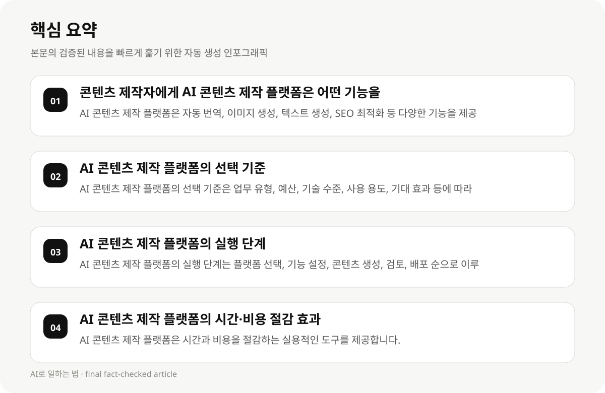

콘텐츠 제작자에게 AI 콘텐츠 제작 플랫폼은 어떤 기능을 제공하는가? #
AI 콘텐츠 제작 플랫폼은 콘텐츠 제작자에게 시간과 비용을 절감하는 실용적인 도구를 제공하며, 다양한 기능을 통해 작업 효율성을 높입니다. 예를 들어, 자동 번역, 이미지 생성, 텍스트 생성, SEO 최적화 등 다양한 기능이 포함되어 있습니다.
이 플랫폼들은 콘텐츠 제작자의 업무 유형, 예산, 기술 수준에 따라 맞춤형 기능을 제공하며, 사용자 경험을 향상시킵니다. 예를 들어, 특정 분야에 최적화된 도구가 존재할 수 있어, 콘텐츠 제작자의 요구에 맞는 선택이 필요합니다.
- AI 콘텐츠 제작 플랫폼은 자동 번역, 이미지 생성, 텍스트 생성, SEO 최적화 등 다양한 기능을 제공합니다.
- 이 플랫폼들은 콘텐츠 제작자의 업무 유형, 예산, 기술 수준에 따라 맞춤형 기능을 제공합니다.
AI 콘텐츠 제작 플랫폼의 선택 기준 #
AI 콘텐츠 제작 플랫폼의 선택 기준은 콘텐츠 제작자의 업무 유형, 예산, 기술 수준, 사용 용도, 기대 효과 등에 따라 달라질 수 있습니다. 예를 들어, 작은 규모의 콘텐츠 제작자라면 기능이 간단하고 비용이 낮은 플랫폼을 선택하는 것이 유리할 수 있습니다.
AI 콘텐츠 제작 플랫폼의 기능은 다양한 콘텐츠 유형에 적용 가능하지만, 특정 분야에 최적화된 도구가 존재할 수 있습니다. 따라서 콘텐츠 제작자의 업무 유형과 목표에 맞는 플랫폼을 선택하는 것이 중요합니다.
- AI 콘텐츠 제작 플랫폼의 선택 기준은 업무 유형, 예산, 기술 수준, 사용 용도, 기대 효과 등에 따라 달라집니다.
- AI 콘텐츠 제작 플랫폼은 다양한 콘텐츠 유형에 적용 가능하지만, 특정 분야에 최적화된 도구가 존재할 수 있습니다.
AI 콘텐츠 제작 플랫폼의 실행 단계 #
AI 콘텐츠 제작 플랫폼의 실행 단계는 다음과 같습니다: 첫째, 플랫폼을 선택하고, 둘째, 기능을 설정하고, 셋째, 콘텐츠를 생성하고, 넷째, 생성된 콘텐츠를 검토하고, 다섯째, 콘텐츠를 배포합니다.
실행 단계는 콘텐츠 제작자의 업무 유형, 예산, 기술 수준에 따라 달라질 수 있습니다. 예를 들어, 작은 규모의 콘텐츠 제작자라면 기능이 간단하고 비용이 낮은 플랫폼을 선택하는 것이 유리할 수 있습니다.
- AI 콘텐츠 제작 플랫폼의 실행 단계는 플랫폼 선택, 기능 설정, 콘텐츠 생성, 검토, 배포 순으로 이루어집니다.
- 실행 단계는 콘텐츠 제작자의 업무 유형, 예산, 기술 수준에 따라 달라질 수 있습니다.

AI 콘텐츠 제작 플랫폼의 시간·비용 절감 효과 #
AI 콘텐츠 제작 플랫폼은 콘텐츠 제작자에게 시간과 비용을 절감하는 실용적인 도구를 제공합니다. 예를 들어, 자동 번역, 이미지 생성, 텍스트 생성, SEO 최적화 등 기능은 콘텐츠 제작자의 업무 효율성을 높입니다.
시간과 비용 절감 효과는 개인 차이가 있으며, 초기 도입 시 고려해야 할 요소가 많습니다. 예를 들어, 콘텐츠 제작자의 업무 유형, 예산, 기술 수준에 따라 플랫폼의 선택이 달라질 수 있습니다.
- AI 콘텐츠 제작 플랫폼은 시간과 비용을 절감하는 실용적인 도구를 제공합니다.
- 시간과 비용 절감 효과는 개인 차이가 있으며, 초기 도입 시 고려해야 할 요소가 많습니다.
AI 콘텐츠 제작 플랫폼의 활용 방식 #
AI 콘텐츠 제작 플랫폼의 활용 방식은 다음과 같습니다: 첫째, 콘텐츠 제작자의 업무 유형과 목표에 맞는 플랫폼을 선택하고, 둘째, 기능을 설정하고, 셋째, 콘텐츠를 생성하고, 넷째, 생성된 콘텐츠를 검토하고, 다섯째, 콘텐츠를 배포합니다.
AI 콘텐츠 제작 플랫폼의 활용 방식은 콘텐츠 제작자의 업무 유형, 예산, 기술 수준에 따라 달라질 수 있습니다. 예를 들어, 작은 규모의 콘텐츠 제작자라면 기능이 간단하고 비용이 낮은 플랫폼을 선택하는 것이 유리할 수 있습니다.
- AI 콘텐츠 제작 플랫폼의 활용 방식은 콘텐츠 제작자의 업무 유형, 예산, 기술 수준에 따라 달라질 수 있습니다.
- AI 콘텐츠 제작 플랫폼의 활용 방식은 콘텐츠 제작자의 업무 유형과 목표에 맞는 플랫폼을 선택하는 것이 중요합니다.
AI 콘텐츠 제작 플랫폼의 제한점과 실패 모델 #
AI 콘텐츠 제작 플랫폼의 제한점은 다음과 같습니다: 첫째, 사용자 경험에 따라 결과가 달라질 수 있으며, 둘째, 기능은 다양한 콘텐츠 유형에 적용 가능하지만, 특정 분야에 최적화된 도구가 존재할 수 있습니다.
실패 모델은 다음과 같습니다: 첫째, 기능이 복잡하고 비용이 높은 플랫폼을 선택하는 것이 유리하지 않으며, 둘째, 초기 도입 시 고려해야 할 요소가 많습니다.
- AI 콘텐츠 제작 플랫폼의 제한점은 사용자 경험에 따라 결과가 달라질 수 있습니다.
- 실패 모델은 기능이 복잡하고 비용이 높은 플랫폼을 선택하는 것이 유리하지 않으며, 초기 도입 시 고려해야 할 요소가 많습니다.
AI 콘텐츠 제작 플랫폼의 모니터링 및 최적화 #
AI 콘텐츠 제작 플랫폼의 모니터링 및 최적화는 다음과 같습니다: 첫째, 콘텐츠의 성과를 평가하고, 둘째, 기능을 조정하고, 셋째, 사용자 경험을 향상시키고, 넷째, 콘텐츠를 최적화합니다.
모니터링 및 최적화는 콘텐츠 제작자의 업무 유형, 예산, 기술 수준에 따라 달라질 수 있습니다. 예를 들어, 작은 규모의 콘텐츠 제작자라면 기능이 간단하고 비용이 낮은 플랫폼을 선택하는 것이 유리할 수 있습니다.
- AI 콘텐츠 제작 플랫폼의 모니터링 및 최적화는 콘텐츠 제작자의 업무 유형, 예산, 기술 수준에 따라 달라질 수 있습니다.
- 모니터링 및 최적화는 콘텐츠의 성과를 평가하고, 기능을 조정하는 것이 중요합니다.